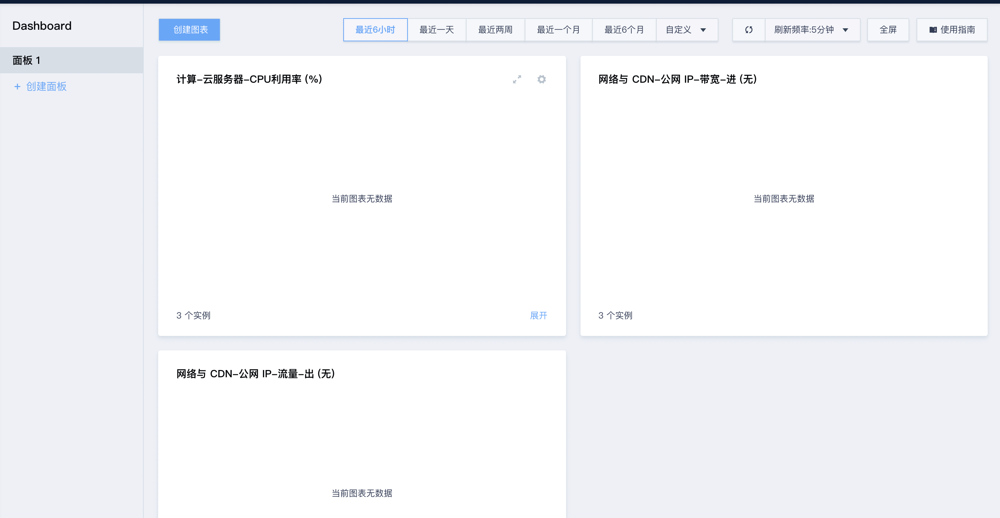
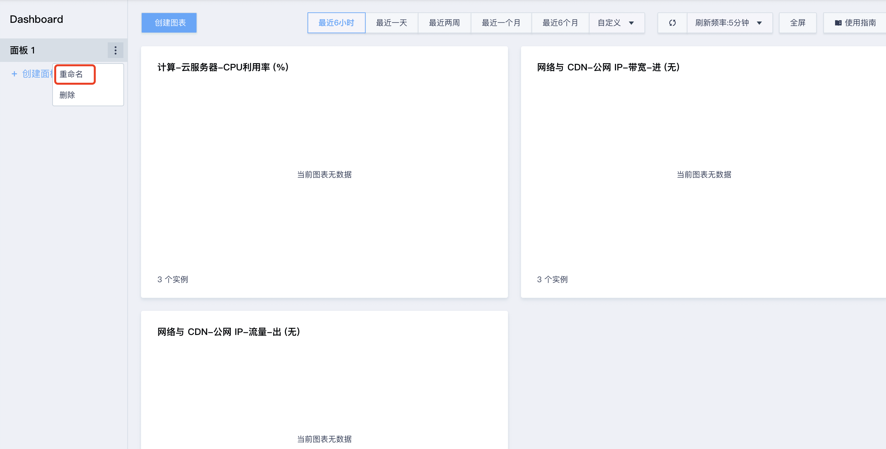
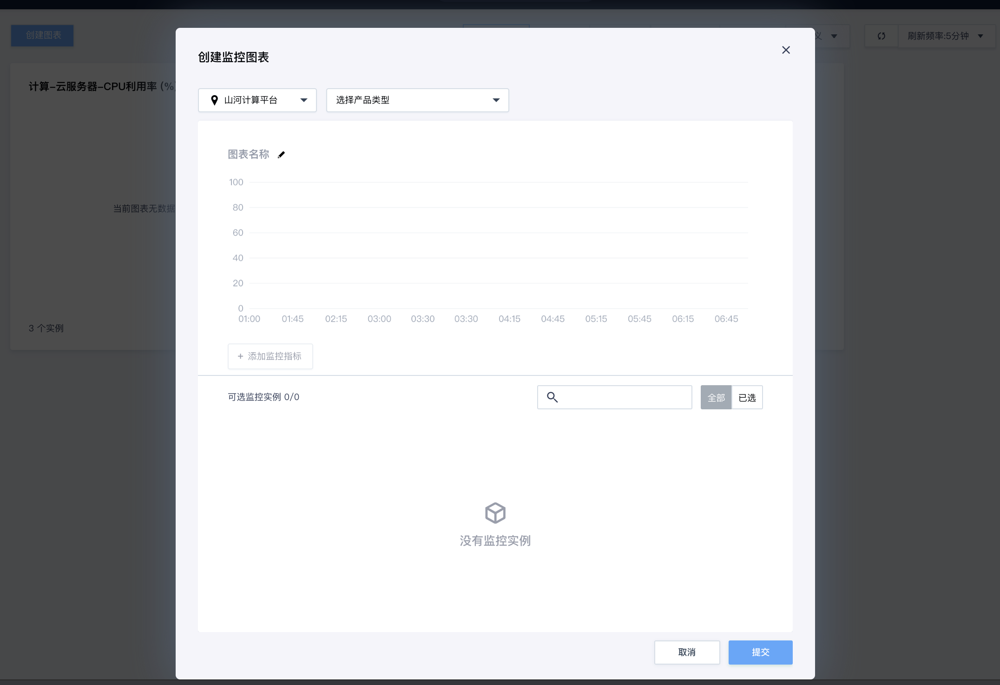
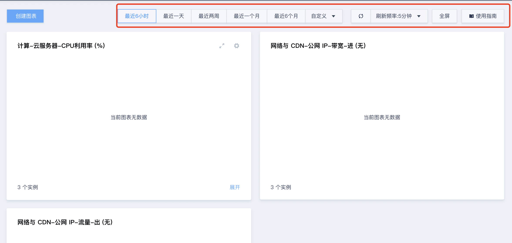
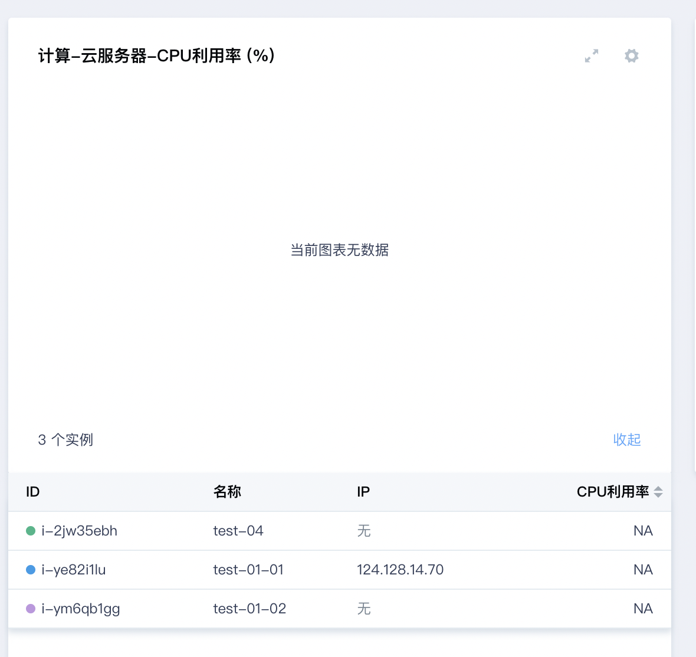
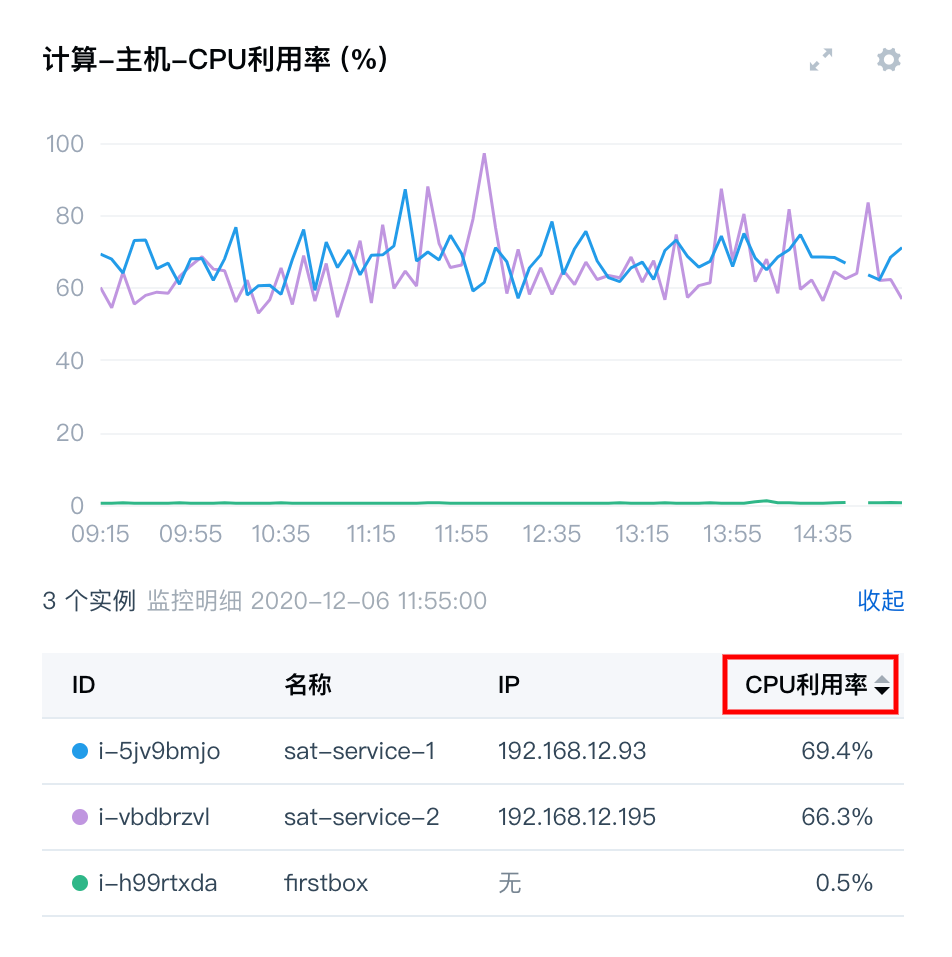
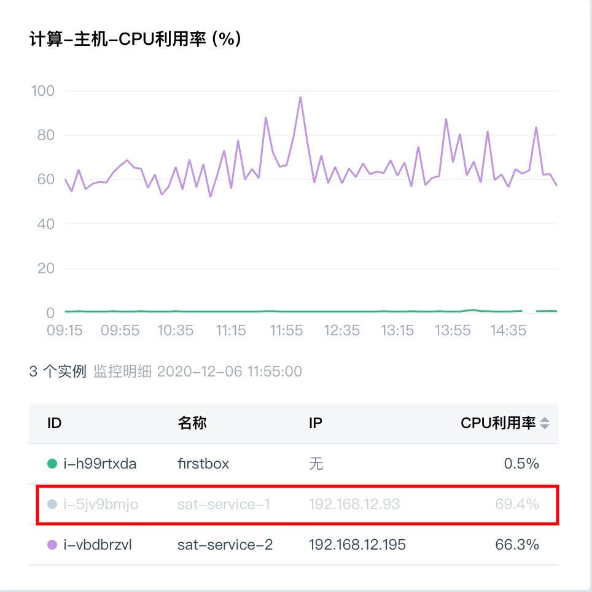
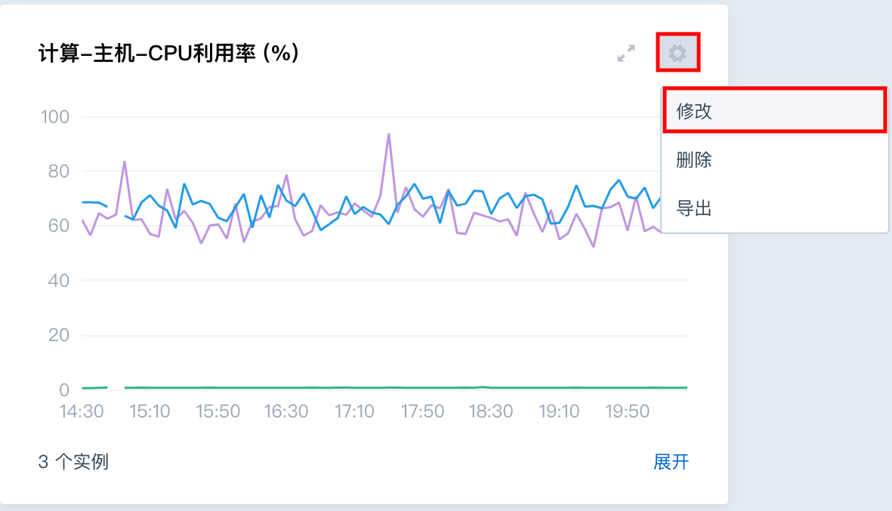
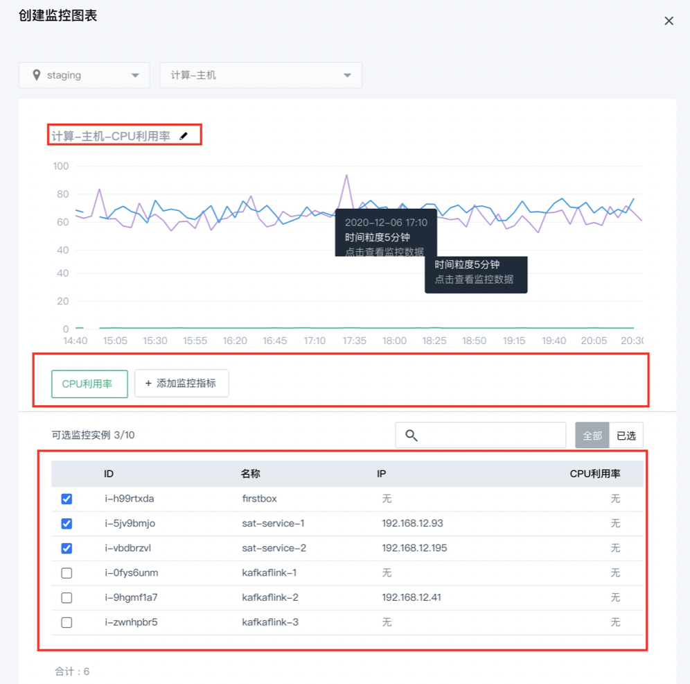
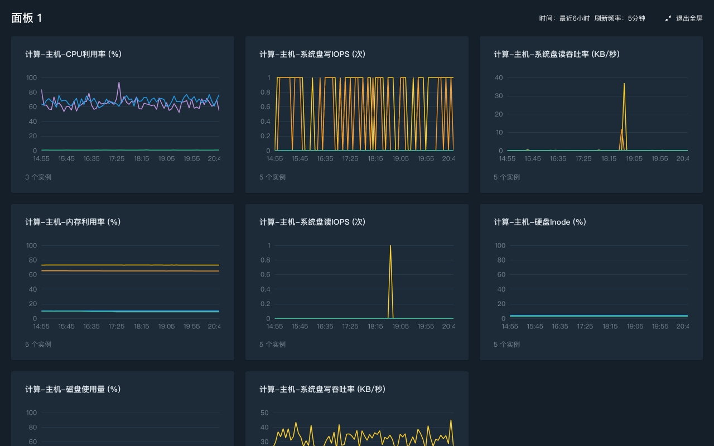

Dashboard
Dashboard提供了多资源类型、跨指标类型、跨分区的自定义集中监控服务，用户可根据业务需求，将各类维度的数据集中在同一个面板下，进行统一可视化监控。
Dashboard操作步骤
登录管理控制台，选择产品与服务 > 监控服务 > 云监控 CloudSat，进入云监控页签。选择Dashboard即可进入。
创建监控面板
进入Dashborad后，系统默认为用户创建一个面板，用户可直接在该面板上进行监控图表的创建。如下图：

用户也可以点击上图“创建面板”按钮，重新创建一个空面板。
修改监控面板
进入监控Dashboard内，在左侧监控Dashboard面板目录管理列内，可对需要修改的面板进行操作。 如下图，鼠标悬浮在需要修改的面板名称上，点击右侧按钮，可选择具体要执行的修改操作 – 重命名。

删除监控面板
按上一步操作方式，可在修改操作功能上选择“删除”，可删除所选面板。 注：该操作会同步删除面板内的所有图表。
创建监控图表
点击面板内“创建图表”按钮。
选择资源所属区域，如下图：

查看监控图表
面板上的图表根据所选时间周期，联动展示具体的监控时间间隔与监控粒度，如下图：

将鼠标悬浮于某个图表上，点击某一个时间刻度，会自动展开图表上的所有监控数据，如下图，点击图表上的一个时间点，下方自动展开资源详情信息，可查看具体数据：

基于上一步已展开的资源详情页，可继续对指标数据信息进行排序，点击最后一列指标列名上的排序按钮，可按监控指标的升序/降序排列出所监控的实例，如下图所示：

基于第二步已展开的资源详情页，若监控实例的指标数据分布过于密集，不便于定位问题，可取消部分资源的指标数据显示。在资源详情页内点击某实例行，即可取消此条折线，如下图，取消后两个实例的监控，图表内只剩一个实例的指标数据信息，再次点击可恢复数据：

图表二次操作
可对已创建的图表进行二次操作，包含修改、删除、导出。点击图表上的按钮可选择具体要执行的操作，如下图：

(1). 修改
支持修改的内容有：
a) 重命名
b) 可增加、删除监控指标
c) 可增加、删除监控实例
点击「修改」按钮，可在编辑格式下进行修改，如下图：

(2). 删除 点击「删除」按钮，图表以及图表内的数据会被一并删除，此操作不可逆。
(3). 导出 为了方便用户对有效监控数据的再次利用，平台提供导出监控数据功能，点击「导出」按钮，即可完成。
查看监控大屏
待监控面板内的图表基本确定之后，可点击「全屏」按钮，在全屏模式下进行统一监控。 上述图表的所有查看功能，包括具体时间点监控数据详情查看、图表详情页内的排序、取消等，都可支持。如下图：
